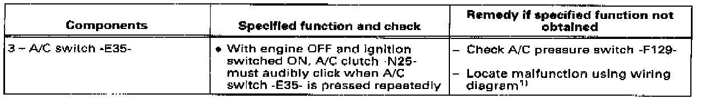

A/C Does Not Cool
A/C Does Not Cool, Evaporator and A/C Lines at Ambient Temperature:Test Conditions:

- Outside (ambient) temperature
above +7 °C (45 °F).
- Fuses OK.
- Compressor belt OK.
- Fresh air blower -3- runs in all four speeds.
Test Procedure:
- Open instrument panel vents -4-
- Start engine.
- Set ventilation control knobs as shown in image.
- A/C switch -E35- (-1-) ON
Check components and specified functions using following table (image).

1) If A/C clutch -N- done not click ON and voltage is present (at least 9.5 V) at A/C clutch connector, A/C clutch -N25- is faulty.